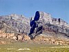

intrusion

Definition: In geology, an igneous intrusion (or intrusive body or simply intrusion) is a body of intrusive igneous rock that forms by crystallization of magma slowly cooling below the surface of the Earth. Intrusions have a wide variety of forms and compositions, illustrated by examples like the Palisades Sill of New York and New Jersey; the Henry Mountains of Utah; the Bushveld Igneous Complex of South Africa; Shiprock in New Mexico; the Ardnamurchan intrusion in Scotland; and the Sierra Nevada Batholith of California.
Source: Wikipedia
Wikipedia Page (Something wrong with this association? Let us know.)
Wikidata Page (Something wrong with this association? Let us know.)